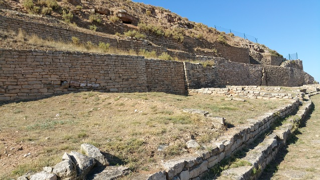
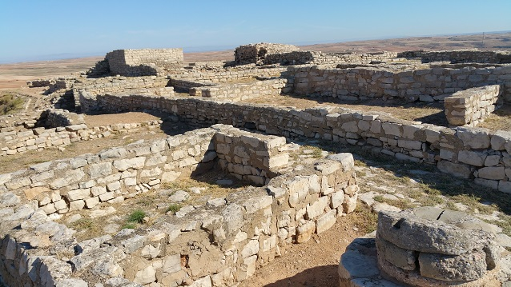
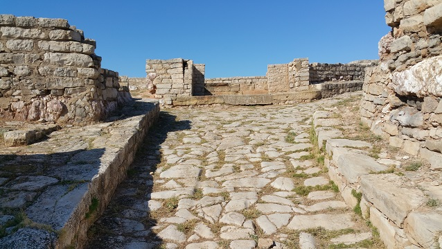
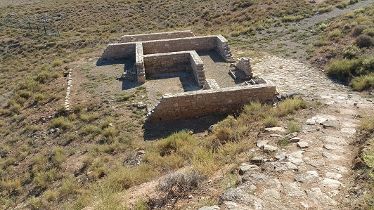
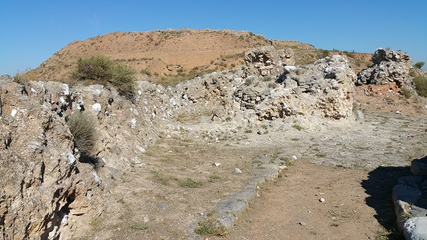
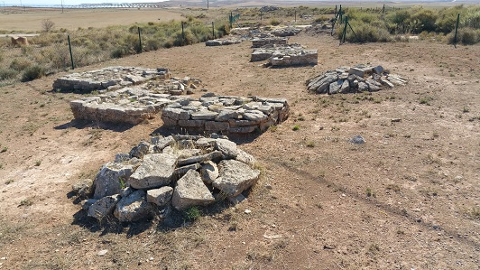

|
Cabezo de
Alcalá
El yacimiento ibero-romano de Cabezo
de Alcalá se localiza en Azaila. Es uno de los yacimientos de esta época
más importantes de España.
Se han identificado tres ciudades.
La ciudad I, se asocia con la cultura hallstática, siglo VII a.e.c. De
esta época es la necrópolis de túmulos a los pies del yacimiento.
La ciudad II, se construyó sobre la ciudad anterior en plena iberización
extendiéndose a lo largo de la acrópolis y rodeada de un recinto
amurallado con acceso por la vertiente sur. Se conserva el anillo
superior.
La ciudad III, es la visible actualmente. De influencias itálicas como
atestigua su templo "in antis" de planta clásica, el edificio termal,
las viviendas domésticas con atrio central y los restos hallados.
La ciudad fue destruida tras el asedio durante las guerras Sertorianas.

La acrópolis. El núcleo principal de
la ciudad se ubica en lo alto de un cerro, con unas dimensiones de 500
metros de longitud por 100 de anchura máxima. Se accedía a la ciudad a
través del puente. Originalmente seria de madera y desmontable en caso
de asedio. Zigzagueando se accede a la puerta principal y al templo. En
la calle pavimentada se observan las carriladas.
Existía una calle principal en torno a la que el resto de viales
desembocaban.
La acrópolis está rodeada por el imponente sistema de murallas y por un
foso que protege la zona Este.
El llano de la ciudad al contrario que la acrópolis, prácticamente
excavada en su totalidad, esta zona baja de la ciudad apenas ha
comenzado a salir a la luz.

Existen dos tipos de viviendas. La
casa íbera y la casa de estilo itálico.
La casa íbera de planta rectangular, con comparticiones interiores y
algunas de dos plantas.
La casa itálica se articula en torno a un patio central, a través del
cual se acceden al resto de las estancias. Hay dos casas.
Las calles están pavimentadas con losas de piedra con aceras elevadas.
El templo, in antis de orden toscano,
se localiza en la entrada principal. Sus paredes estaban decoradas con
estucos y el suelo pavimentado con mosaico. En las excavaciones se
descubrieron partes de esculturas, dos cabezas de figuras humanas,
manos, pies, fragmentos de vestidos, y un scorpio.

Al norte del yacimiento se localizan
las termas. Con las estancias habituales, datan de los siglos II y I
a.e.c.
El agua para uso diario era recogida en el río Aguasvivas, a unos
cientos de metros del poblado.
El aljibe era usado para el almacenamiento del agua, como reserva en las
épocas de sequia o asedio. Posteriormente abasteció a las termas.

Ver: Termas
romanas
Uno de los elementos más
característicos de esta ciudad es la rampa de asedio, agger, que las
tropas de Sertorio construyeron. Tenía una longitud de 100m y una
anchura de 20m, salvando el foso y alcanzaba la muralla superior. Con
las maquinas y torres de ataque, con sus arietes, destruyeron la
muralla.
La ciudad no volvió a reconstruirse.
La rampa aun visible, es una de las pocas conservadas en el mundo, junto
a la de Masada. Construida con tierra, piedras y argamasa. En su
construcción cubrieron el túmulo funerario y el campo de lajas hincadas
para dificultar el ataque de la caballería e infantería.

En la necrópolis se han localizado 91
túmulos funerarios, datados en la I Edad del Hierro. De variada
tipología, cuadrados, rectangulares y circulares.
El gran túmulo ibérico debió pertenecer a un gran personaje. En el
asedio fue cubierto por la rampa y en la Guerra Civil usado como
refugio.

También destaca la panadería, las torres de vigilancia, la zona
comercial,….
|